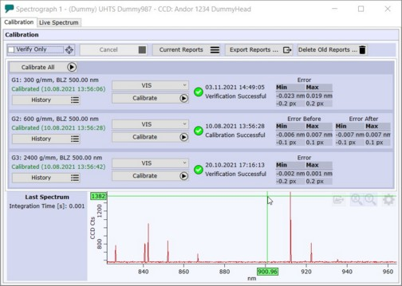
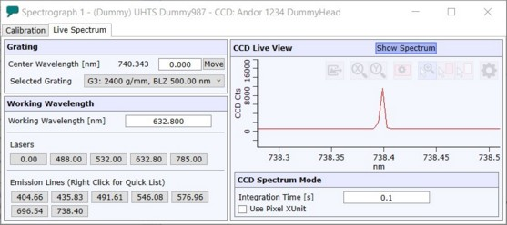

|
光谱仪校准
|
更多信息（操作指南）：

校准（选项卡）
顶栏
仅验证（复选框）
如果选中，可以在不更改当前校准的情况下验证光栅校准的质量。
取消
取消当前正在运行的校准或验证。
当前报告
显示每个光栅的最新校准或验证报告。
导出报告
为了进行问题分析，可以将最新的报告导出为 ZIP 文件并发送给 WITec。
请注意，也可以在创建 支持 ZIP 文件 时包含最新的报告。
删除旧报告
删除超过 90 天的报告。当经常进行校准/验证时，清理不必要的数据可能是合理的。
光栅
对于每个光栅，可以看到光栅信息及其校准状态。
历史记录
打开当前光栅的所有校准和验证报告的历史记录，可打开并比较其中的任何报告。
组合框（"VIS"）
在此可以选择为当前光谱仪-光栅组合指定的校准组之一。
校准（或验证）
启动校准或验证过程。
状态/信息
每个光栅显示上次校准或验证的结果：是否成功，以及以纳米和像素为单位的最小/最大误差值。
在底部区域可以看到上次测量的光谱及其积分时间。
实时光谱（选项卡）

单击 显示光谱 以显示实时光谱，例如调整校准源的强度。
可以选择一个光栅，并通过输入数字或单击一个发射线按钮来调整中心波长。